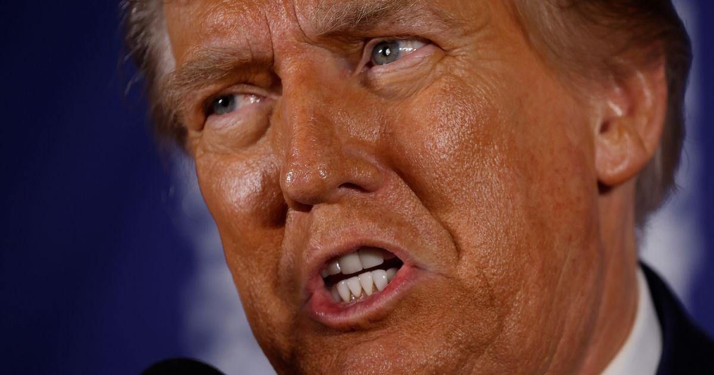

Trump, Under Criminal Prosecution, Wins New Hampshire AnywayCONCORD, N.H. ― Despite facing both federal and Georgia state prosecutions related to his coup attempt, Donald Trump nevertheless beat Nikki Haley in the New Hampshire primary Tuesday, although by a narrower margin that recent polls had suggested. The former president had been leading Haley, his own United Nations ambassador, by 16-18 points in the most recent polling. Exit poll results and early returns Tuesday evening indicate that the final margin will be smaller. Trump, speaking at his election night party in Nashua, appeared angry that Haley was not dropping out, and instead had already taken the stage and vowed to continue her campaign. “I don’t get angry, I get even,” he said. “You can’t let people get away with bullshit. And when I watched her in the fancydress ― that probably wasn’t so fancy ― come up, I said, ‘What’s she doing? We won.’” He then launched into a rant filled with his familiar lies about the 2020 election having been stolen from him, including a new one that he had won the 2020 general election in New Hampshire, when in fact he had lost it by 60,000 votes or 7 percentage points. Haley has for days insisted she would continue her campaign into South Carolina, where she was twice elected governor, regardless of the outcome in New Hampshire. Indeed, her staff has already said she will hold a rally in Charleston Wednesday night. For Trump though, even a narrower-than-expected win is still a win, his second straight since the GOP primary contests began eight days ago in the Iowa caucuses. Trump finished 30 points ahead of both Haley and Florida Gov. Ron DeSantis, who a year earlier was beating Trump in both national and early state polls. New Hampshire was the one state where Haley seemed competitive with Trump. In the next major contest, the primary in her home state of South Carolina, she trails Trump by an average 37 points. Trump also enjoys a massive lead in national polls, which will likely translate into big wins on Super Tuesday’s 16 primaries and caucuses across the country on March 5. Both of those polling leads, however, could shrink based on New Hampshire’s result. The Super Tuesday elections come one day after the scheduled start of his trial in Washington on four felony charges related to his words and actions around the Jan. 6, 2021, attack on the Capitol by a mob of his followers designed to coerce then-Vice President Mike Pence and Congress into awarding him a second term even though he had lost the 2020 election. Trump is claiming he cannot be prosecuted for any of those charges because he had “total immunity” while he was president. An appeals court is set to rule soon on that, which Trump will almost certainly take to the U.S. Supreme Court if the decision goes against him. The delays caused by his appeal appear likely to delay the start of the trial, although it is unclear by how much. Trump is also facing a second federal prosecution in South Florida for refusing to turn over secret documents he took with him from the White House to his Palm Beach country club. There is also a Georgia state prosecution for his attempt to overturn his election loss in that state, as well as a New York state indictment accusing him of falsifying business records to hide a $130,000 hush money payment to a porn actor in the days before the 2016 election. Trump nevertheless appears to have the support of the majority of GOP primary voters. Many Republicans, including DeSantis, who endorsed Trump after ending his campaign for the nomination on Sunday, said the 91 felony charges across four indictments increased Trump’s popularity and made it impossible for any rival to defeat him in the primaries. |
 |